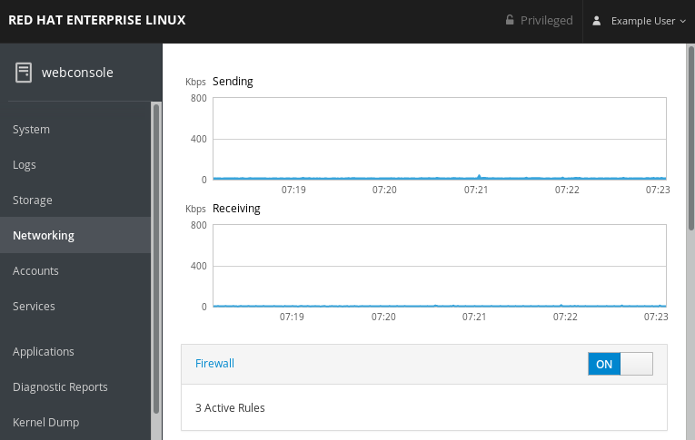
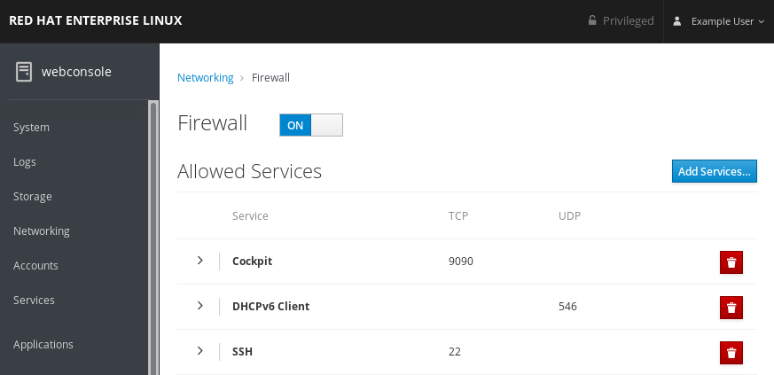

The Red Hat Enterprise Linux web console enables you to run, stop, and configure the system firewall. You can select and add services into the list of enabled services.
You can also disable a service by removing this service from the list of enabled services.
The RHEL 8 web console configures the firewalld service.
The RHEL 8 web console displays only predefined firewalld services in the default zone.
For details about the firewalld service, see Getting started with firewalld.
This section describes where and how to run the RHEL 8 system firewall in the web console.
Note
The RHEL 8 web console configures the firewalld service.
Procedure
Log in to the RHEL 8 web console.
For details, see Logging in to the web console.
- Open the Networking section.
In the Firewall section, click ON to run the firewall.

If you do not see the Firewall box, log in to the web console with the administration privileges.
At this stage, your firewall is running.
To configure firewall rules, see Adding rules in the web console using the web console.
This section describes where and how to stop the RHEL 8 system firewall in the web console.
Note
The RHEL 8 web console configures the firewalld service.
Procedure
Log in to the RHEL 8 web console.
For details, see Logging in to the web console.
- Open the Networking section.
In the Firewall section, click OFF to stop it.
If you do not see the Firewall box, log in to the web console with the administration privileges.
At this stage, the firewall has been stopped and does not secure your system.
The following text describes how to add services in the system firewall using the web console.
The RHEL 8 web console displays predefined firewalld services in the default zone.
Important
The RHEL 8 web console configures the firewalld service. However, allowing services apply to all interfaces. The RHEL 8 web console supports the default zone. It can cause conflicts with low level firewall rules.
Also the web console does not allow generic firewalld rules what are not listed in the web console.
Prerequisites
Firewall must be enabled.
For details, see Running the firewall in the web console.
Procedure
Log in to the RHEL web console.
For details, see Logging in to the web console.
- Click Networking.
Click on the Firewall box title.
If you do not see the Firewall box, log in to the web console with the administration privileges.
In the Firewall section, click Add Services.

- In the Add Services dialog box, find the service you want to enable on the firewall.
Enable desired services.

- Click Add Services.
At this point, the RHEL 8 web console displays the service in the list of Allowed Services.